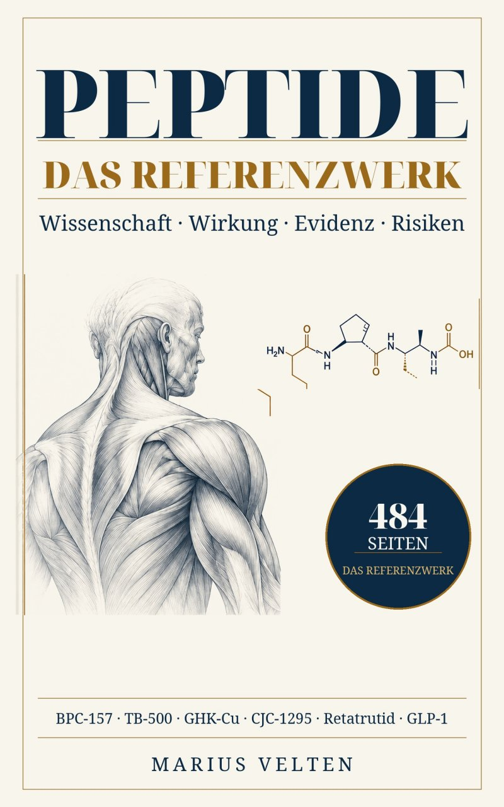

PEPTIDE – das deutschsprachige Referenzbuch über Peptide
Wer ein fundiertes Peptide-Buch auf Deutsch sucht, findet in PEPTIDE eine systematische Einordnung von Grundlagen, Wirkstoffen, Studien, Risiken und offenen Fragen – statt einer Sammlung von Hype-Begriffen.
Aktualisiert: 30. September 2026 · allgemeine Information, keine individuelle Therapieempfehlung

Warum dieses Buch?
Peptide sind längst kein Nischenthema mehr. Gleichzeitig liegen zwischen zugelassenen Arzneimitteln, klinischen Prüfsubstanzen und Online-„Research Peptides“ Welten. Das Buch macht genau diese Unterschiede sichtbar und trennt Mechanismus, präklinische Daten, Humanstudien und regulatorischen Status sauber voneinander.
Im Buch
- Grundlagen zu Peptidbiologie und Pharmakologie
- ausführliche Wirkstoffprofile
- klinische und präklinische Evidenz getrennt
- Sicherheits- und Qualitätsfragen
- GLP-1-, GIP- und Multiagonisten
- Regeneration, GH-Achse, Haut, Stoffwechsel und weitere Themenfelder
Peptide-Buch auf Deutsch: für wen ist es gedacht?
Das Buch richtet sich an Leserinnen und Leser, die nicht nur einzelne Wirkstoffnamen nachschlagen möchten, sondern verstehen wollen, wie belastbar eine Aussage ist. Deshalb werden zugelassene Arzneistoffe, laufende klinische Entwicklungsprogramme und experimentelle Forschungspeptide bewusst nicht auf dieselbe Evidenzstufe gestellt.
Häufige Fragen
Gibt es PEPTIDE auf Deutsch?
Ja. Das Werk ist deutschsprachig, umfasst 484 Seiten in der Printausgabe und ist bei Amazon als Kindle-, Softcover- und Hardcover-Ausgabe erhältlich. Zusätzlich ist eine Printausgabe über epubli gelistet.
Ist das Buch ein Dosierungs- oder Selbstmedikationsratgeber?
Nein. Schwerpunkt sind Einordnung, Forschung, Evidenz, Sicherheitsfragen und Unterschiede zwischen zugelassenen Arzneistoffen und experimentellen Substanzen.